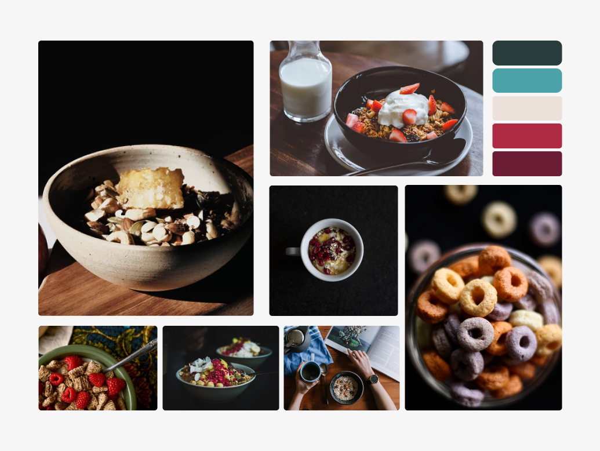
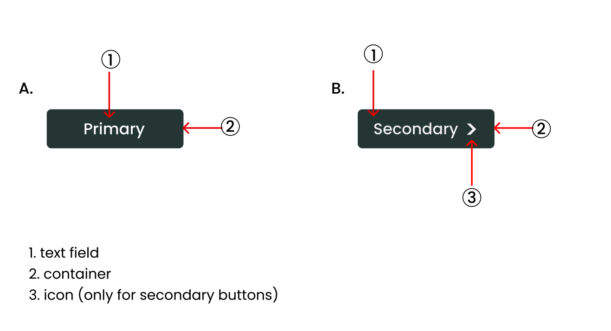

For my IAT 339 class, I was given the task to prototype a responsive e-commerce website for a desired fictional company. My team decided to base our project on a cereal company where customers can buy their favorite organic and ethically-sourced in BULK through our website.
Half of digital consumers say environmental concerns impact their purchasing decisions üå±
-Katie Young (Strategic Insights Manager at GWI)
About grainjar
The growth of environmentally-conscious consumers, driving change especially in the last 5 years and during the COVID-19 pandemic inspired my team to create a strategic and sustainability-centered BULK cereal company which sells a set of curated, natural and ethically-sourced cereal. Our company aims to eliminate excessive plastic waste as well as opting for more eco-friendly packaging options such as cardboard and recycled plastic.
The primary goals of our company are :
breaking the stigma that cereal is exclusively a breakfast food (can be consumed any time of the day in a multitude of ways)
encouraging everyday lifestyle changes to take small steps towards sustainability
delivering a unique brand experience through our website and online presence
Target audience
According to a study by Mintel, millennials (aged 22-35) are more likely to have cereal as a snack and between meals. Furthermore, global data shows that millennials are driving the sustainable movement and they are most likely to pay extra for eco-friendly and sustainable products than any other age groups. After combining my research findings, we customized our brand to appeal to millennials who are vastly environmentally-conscious and most likely to have cereal more than once daily.
Defining user & client goals
We established some of the user goals we wanted to consider and implement when prototyping our website.
User goals
Quickly find what they are searching for
Intuitively navigate through the website
Identify consistent interactive cues throughout the website pages
Client goals
The client should be able to showcase their products to customers clearly and effectively
The client should be able to communicate their ethos through design
Communicate a clear sustainable and organic image
Design process
Brand identity
My team started off our design process by each creating a unique moodboard to consolidate a theme, color palette and mood we desired to establish in the website. To reflect the sustainable and organic image of the company, I chose a neutral color palette with brown and orange accents.
Moodboard created by me

Moodboard inspired by Clare Huang's moodboard
My teammate Clare had a divergent moodboard with a grungy and bold theme. My team decided to move forward with my idea and Clare's as a secondary choice with goals to incorporate the darker theme somewhere in the website.
Consolidating a pattern library
Next, we prototyped a style guide on Figma preliminary to individually building a final brand style guide for grainjar on HTML/CSS. To get a better sense of what style guides look like, we did additional research on brand style guides for websites.
The grainjar colour palette / interactive buttons
Laying out all the pages
My team created a sitemap to represent the relationships between pages and establish a hierarchy to efficiently sort pages according to their functionality. The "shopping cart" pages are differentiated in color from the rest of the pages.
Sitemap of the grainjar website
Checkout user flow
After brainstorming through quick sketches on paper and establishing the sitemap for the website, we moved on to creating mid-fidelity wireframes on Figma. As an e-commerce website, the most time-consuming part was designing the checkout pages as they needed to be as concise as possible. We tried to envision the user flow early in the prototyping phase to ensure a seamless checkout experience for customers.
Mid-fidelity wireframes Final high-fidelity checkout mockup
One of the feedbacks we got during our in-class user testing is that there's a lack of hierarchy between the right and left columns as the fraction of both sides are relatively the same. We had a section to input the discount code on every page in checkout, but decided to only have it in the payment page as users expressed it was distracting to have it on every page. We also decided to add a box around the second and reduce its sizing to distinguish the content hierarchy between the left and right columns and ensure that it doesn't create any ambiguity or distractions in the checkout process.
Checkout layout prototype
Final checkout layout
×
Problem space
While brainstorming, we realized that if we sort according to their type and ingredients, many cereals would overlap in multiple categories, creating ambiguity.
Solutions
As a result, we took an unconventional approach with sorting cereal. We organized them by different occasions rather than based on the different types and flavours.
Unique categories
Different banners
Different background colors
Unique layouts for each page
Unique set of curated cereal
4 unique categories with a set of curated cereal
Designing a design system
Each member of the team created a brand style guide unique to the website. It was important to create a reference tool in order to maintain consistency and facilitate the collaboration process when it comes to actually building the website. I built the style guide as well as UI modules such as the main navigation bar and product detail module using HTML/CSS. I included code snippets below each section as a reference.
Basic interactive elements
Basic interactive elements such as the button styling were established in the pattern library prior to building the website and is used across the entire website to ensure consistency at all times. The button padding, sizes, margins, colours and functionalities are outlined in the pattern library.
Call to action buttons
Buttons are interactive elements which communicate and trigger an action. On the grainjar website, there are 4 different types of buttons- primary which is used for “add to cart” buttons, secondary buttons used for “read more” buttons and disabled buttons for selecting flavours in product detail modules.
Call to action button hierarchy
Anatomy
All the default buttons used at grainjar are center-aligned. In the case that an icon is used in secondary buttons, the text is left-aligned.

Interactive button anatomy used at grainjar
Button size
There are 3 different button sizes at grainjar. The buttons used for forms are longer than the default buttons. All the buttons use padding: 8px 28px 8px 28px, a border-radius of 3px and a 0.9em font-size.
Button sizing
Reflection
Designing a brand design system was a rewarding experience which allowed me to breakdown the web into modular UI components and prioritize consistency and accessibility across our prototypes. Not to mention, having a style guide has facilitated the collaboration process between my team mates, as establishing the basic interactive elements such as primary buttons and margins from the get-go was the key to success in working as efficiently as possibly when it came down to the most time-consuming, coding component of the project.